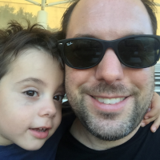

About me

Who is your tutor / instructor
Trevor Reynolds
Who is your labber / workshopper
No one yet
Have you any programming or web design experience?
Extensive, I started as a web developer in the 90's, try building
a website for 800 x 600 monitors that works over dial-up, it ain't
fun.
Do you see yourself as a programmer or designer, or both?
My development days are ending, I work with dev teams now,
leading projects. However, I still love to code, so programmer if
I’m forced to choose one.
What has brought you to this course at RMIT?
I want to go on to Masters courses in IT management, ultimately
to work as a CTO, so a degree will help with admission, plus, it's
always irked me that I don't have a degree.
What are you hoping to get out of the course?
I'm interested in HTML 5, last time I did any serious HTML
development work was back in the day when Flash was still a thing.
Nowadays it tends to be React whenever I need to do front end work,
but generally using someone else’s components, with HTML/React to
bind them together and layout a webpage, nothing exciting, just
forms work.
What websites do you use the most? (NB: "family friendly" !)
Lol, "family friendly," I love memes on Reddit and am a huge fan
of YouTube, either watching some stupid video, catching up on the
news or learning something new.
Do you have any interests or hobbies?
It sounds like a cliché, but I love learning, especially about
new technology advancements and engineering team dynamics. It's one
of my most favourite parts of this industry, you are never bored,
and always have something new to sink your teeth into. I enjoy
gaming, but am terrible at it, and I have two crazy young boys, one
in the picture.